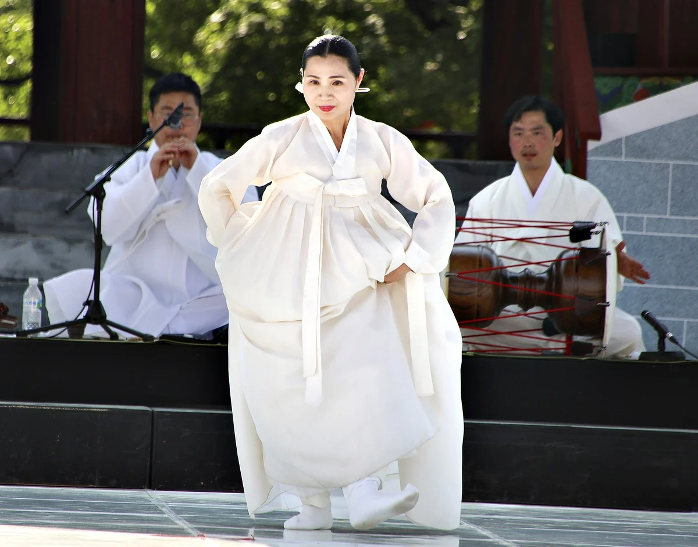

Titolo dato dal fotografo
Guardala nella mostra in 3D Scarica il file originale

Come citare
Yumok (流木) Lee Dong-joo, «Danza tradizionale», 2019. CC BY 4.0, seungheon.com
Fotografie di luce d'acqua di Yumok
Opera selezionata, Gara fotografica nazionale di Namwon, 2019 · 2019
Riconoscimenti
Titolo dato dal fotografo
Guardala nella mostra in 3D Scarica il file originale
Yumok (流木) Lee Dong-joo, «Danza tradizionale», 2019. CC BY 4.0, seungheon.com